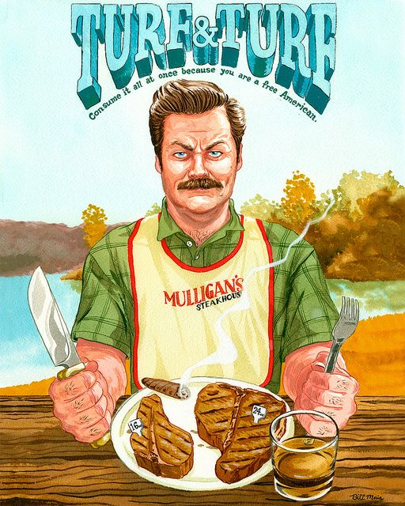

The Turf N' Turf

Get Ready to Put some Hair on your Chest
Description
Ron's favorite order at Charles Mulligan's Steakhouse:
prime, dry-aged beef with a side of prime, dry-aged beef.
Ingredients
- PorterHouse Steak
- 24oz PorterHouse steak
- Kosher salt
- Vegetable oil
- T-Bone Steak
- 16oz T-Bone steak
- 3 cloves crushed garlic
- Vegetable oil
- 5 Tbsp unsalted butter
- Rosemary sprigs
- Thyme sprigs
- Mashed Potatoes
- 7 Yukon gold potatoes (about 3lbs)
- ½ cup half & half
- 5 Tbsp unsalted butter
- Kosher salt
- White pepper
Steps
- Make the PorterHouse Steak
- Make the T-Bone Steak
- Make the Mashed Potatoes
Voila!
Now enjoy this with a side of Ron's Favorite Lagavulin 16.
Go Back to Main Page